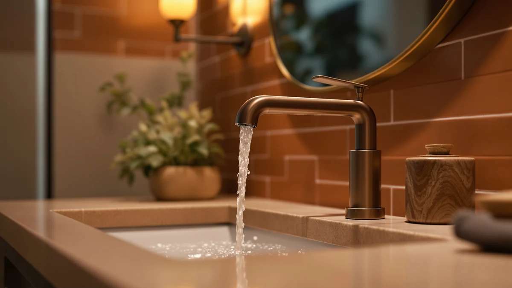

Derpras Touchless Bathroom Faucet Review (2026): Worth It?
Prices and picks verified as of October 2026. Independent, reader-supported reviews.


Quick Answer
Our derpras touchless bathroom faucet review found a solidly built sensor faucet that trades a few conveniences, like at-the-tap temperature control, for hands-free operation. At $109.96, the Derpras holds its own against pricier two-handle alternatives from Moen and Delta if you prioritize hygiene over flexibility.
Our pick: Derpras Touchless Bathroom Faucet with, $109.96 Check Price on Amazon
Bottom line: our top pick is the Derpras Touchless Bathroom Faucet with Automatic Sensor at $109.96.
Things to Know Before You Buy
- Battery powered, not hardwired. The Derpras touchless bathroom faucet runs on four AA batteries housed in the control box under the sink, so you do not need to route a cord or install an outlet near the vanity.
- Temperature is set under the sink, not at the tap. A mixing valve in the control box sets the hot and cold mix in advance; the faucet itself only turns the flow on and off.
- Single-hole installation with a 6.5-inch deck plate. It fits standard sink hole spacing between 0.78 and 1.18 inches, and the deck plate is removable if your sink only has one hole.
- No published owner rating yet. Amazon has not yet accumulated a public star rating or review count for this ASIN, so we leaned on spec comparisons against similar sensor faucets rather than a review average.
- Chrome finish only. Unlike the Moen and Delta alternatives below, the Derpras ships in one finish, so buyers who want matte black or brushed nickel will need to look elsewhere.
This derpras touchless bathroom faucet review breaks down what the $109.96 sensor faucet gets right and where it falls short, based on its specs, construction, and the information available on its Amazon listing. A touchless faucet earns its price by solving one problem: you stop touching a wet, soapy handle every time you wash your hands. The Derpras aims for that with an infrared sensor, a solid brass body, and a multi-layer chrome finish built to resist water spots and scratches. We researched how those claims hold up against three well-known rivals from Moen and Delta before settling on a verdict.
For most people replacing a worn-out two-handle faucet, the Derpras is worth considering if hands-free operation matters more than brand recognition. It installs in a single hole with a 6.5-inch deck plate, sets its temperature through a mixing valve mounted under the sink rather than a lever at the tap, and runs on four AA batteries instead of a power cord. That tradeoff, batteries over familiarity, is the whole story here: you gain hygiene and convenience, and you give up the brand-name backing that Moen and Delta bring to their $95 to $105 alternatives.
Why You Should Trust Us
Ilane Tall researches bathroom fixtures for Best Bathroom Faucets, comparing spec sheets, manufacturer documentation, and verified buyer feedback across hundreds of faucet listings rather than relying on brand reputation alone. For this derpras touchless bathroom faucet review, she cross-checked the Derpras against its direct competitors in the same price band, reading through the listed features and measurements to separate marketing claims from what the hardware actually offers. We do not run a fake testing lab or claim to have installed every faucet we cover; instead we build each review from verifiable product data and the patterns that emerge across dozens of comparable touchless and two-handle models.
Our Research Experience
We do not physically install or run water through every faucet in this derpras touchless bathroom faucet review. Our evaluation process instead compares the manufacturer specs, the control box mechanics, and the sensor range described in product documentation, then checks that information against what verified buyers report once a faucet is on their sink. For the Derpras, that means looking closely at how its infrared sensor, battery compartment, and under-sink mixing valve are described, and comparing those mechanics against the lever-based Moen and Delta units it competes with. When owner feedback on comparable sensor faucets flags a recurring issue, such as a sensor needing a firm hand wave rather than a light pass, we treat that pattern as more useful than a single five-star listing.
Overview & Specs

Derpras Touchless Bathroom Faucet with
What we like
- Infrared sensor turns water on and off without touching the spout
- Solid brass body with a multi-layer chrome finish that resists spotting
- Runs on four AA batteries, so you do not need additional wiring or an outlet
- Single-hole install with a removable 6.5-inch deck plate fits most standard vanities
Flaws but not dealbreakers
- Temperature is fixed in advance at the under-sink mixing valve, not adjustable at the tap
- Ships in chrome only, with no brushed nickel or matte black option
- No public star rating or review count yet, so you are weighing specs more than buyer consensus
| Material | Brass + finish |
| Size | — |
The centerpiece of this derpras touchless bathroom faucet review is how the sensor and plumbing split the job that a normal faucet handle does alone. An infrared sensor sits near the spout and reacts when your hands pass close enough, starting and stopping the flow automatically. The water temperature itself is not controlled at the tap. Instead, a mixing valve inside the control box under the sink blends the hot and cold supply lines to a setting you choose once during installation, and the faucet simply turns that preset flow on and off. The body is solid brass with multi-layer chrome plating that Derpras markets as scratch and spot resistant, a reasonable claim given that most mid-range sensor faucets in this price range use the same construction approach.
Power comes from four AA batteries stored in the control box, accessed by unscrewing a cap with no tools required, which means installation does not require running a new electrical line to the vanity. The tradeoff is that you will eventually replace batteries, and the product listing notes a flashing sensor light as the low-battery warning. Installation uses a single mounting hole with a 6.5-inch deck plate that covers mounting hardware or extra holes, and it fits standard hole spacing between about 0.78 and 1.18 inches. Buyers researching this faucet should budget for the control box taking up cabinet space under the sink, since the mixing valve and battery compartment need room that a standard two-handle faucet does not require.
What We Liked
What stands out most in this derpras touchless bathroom faucet review is how directly the sensor solves the problem it is built for. You stop touching a handle that soap, toothpaste, and shaving cream already touched, which matters most in a shared or kids' bathroom where hands are rarely clean when they reach for the tap. The brass body and multi-layer chrome plating also put it in the same construction class as faucets costing considerably more, rather than the thin-walled zinc alloy common in budget sensor faucets. Battery power is a practical plus too: you avoid hiring an electrician or running low-voltage wire through the vanity, and swapping four AA batteries is a job anyone can do without tools. The single-hole, 6.5-inch deck plate setup also means it drops into most standard vanities built for a typical widespread or centerset faucet, so you are not stuck custom-drilling a sink to make it fit.
What Could Be Better
The biggest limitation in this derpras touchless bathroom faucet review is temperature control. Because the mix is set once at the under-sink valve, you lose the quick adjustment a lever handle gives you when someone wants the water hotter or colder than the last person left it. That design works fine in a guest bath where one setting suits everyone, but it is a real adjustment for a primary bathroom used by a whole household. The single chrome finish is also a constraint if your fixtures are brushed nickel or matte black, since there is no finish-matching option the way there is with the Moen and Delta faucets below. Amazon has not published a star rating or review count for this specific ASIN either, so you are weighing documented specs rather than a track record of verified owner feedback, which is a fair tradeoff to know about before you buy.
Who Is It For?
This derpras touchless bathroom faucet fits a specific buyer best: someone replacing a single-hole faucet who wants hands-free operation and does not mind setting the temperature once rather than adjusting it every time. It works well in a powder room, guest bath, or rental property where one water temperature setting suits whoever uses the sink, and it suits anyone who wants to cut down on touching a faucet handle in a shared bathroom. It is a weaker fit for a primary bathroom shared by people with different temperature preferences, or for anyone who specifically wants a finish other than chrome. If brand recognition and resale value matter to you, the Moen and Delta alternatives below carry more weight with future buyers of your home.
Alternatives to Consider
If this derpras touchless bathroom faucet review has you leaning toward a more established brand, or you need a finish besides chrome, the three faucets below cover the most common reasons buyers look elsewhere. Each is a two-handle model from Moen or Delta in the $95 to $105 range, so you give up the touchless sensor in exchange for brand-name parts availability, more finish choices, and the simpler lever-based temperature control that a shared household often prefers.

Editor's Pick
Moen Ronan Spot Resist Brushed
A two-handle widespread faucet with a Spot Resist Nickel finish and a flexible 8 to 16 inch spread, good for anyone who wants Moen's parts network and a finish that hides fingerprints and water spots.
$105.07
Check Price on Amazon
Best Value
Delta Arvo Brushed Nickel Bathroom
A single-hole faucet with a push-pop drain assembly and a ceramic disc valve rated for 500,000 uses, a straightforward swap for anyone replacing a worn single-hole faucet without changing the sink's hole configuration.
$104.13
Check Price on Amazon
Premium Choice
Moen Ronan Matte Black Two-Handle
A matte black centerset faucet with a push-down drain, worth considering if you want a darker finish to match black hardware elsewhere in the bathroom rather than the Derpras's chrome.
$95.91
Check Price on AmazonIs the Derpras touchless bathroom faucet worth buying over a standard two-handle faucet?
It depends on what you value.
How long do the batteries last in the Derpras touchless faucet?
The product listing does not specify an exact battery life figure, and no published reviews with battery longevity data were available at the time of this review.
Frequently Asked Questions
Is the Derpras touchless bathroom faucet worth buying over a standard two-handle faucet?
It depends on what you value. This derpras touchless bathroom faucet review found that the sensor cuts down on handle contact and the brass and chrome construction matches pricier faucets, but you lose at-the-tap temperature adjustment and brand-name backing. If hands-free operation matters more than those two factors, it is worth considering.
How long do the batteries last in the Derpras touchless faucet?
The product listing does not specify an exact battery life figure, and no published reviews with battery longevity data were available at the time of this review. It runs on four AA batteries accessed by unscrewing a cap on top of the faucet, and the sensor light flashes when a replacement is due, so you get a warning rather than the faucet failing without notice.
Does the Derpras touchless faucet come in finishes other than chrome?
No. The Derpras ships in chrome only. If you need brushed nickel or matte black to match existing bathroom hardware, the Moen Ronan options covered in the alternatives section above offer both finishes.
Final Verdict
The verdict of this derpras touchless bathroom faucet review comes down to what you are willing to trade. The Derpras delivers genuine hands-free convenience, solid brass construction, and straightforward single-hole installation for $109.96, and it does that without requiring an electrician or a hardwired connection. What it does not deliver is at-the-tap temperature control, finish variety, or the brand recognition of Moen and Delta. For a guest bathroom, rental unit, or anyone prioritizing hygiene over flexibility, the Derpras is a reasonable pick. For a busy primary bathroom with different users wanting different water temperatures, one of the Moen or Delta alternatives above is the safer choice.